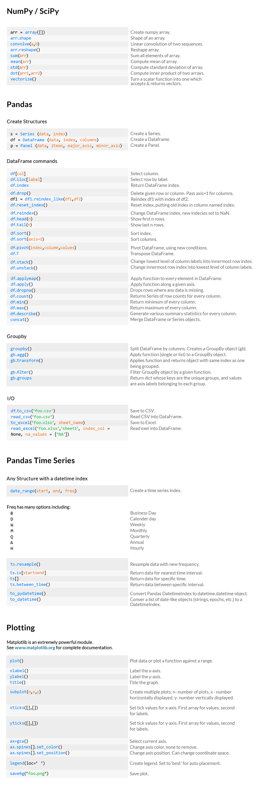

量化分析师的Python日记【第3天：一大波金融Library来袭之numpy篇】
接下来要给大家介绍的系列中包含了Python在量化金融中运用最广泛的几个Library:
- numpy
- scipy
- pandas
- matplotlib
会给初学者一一介绍
NumPy 简介
一、NumPy是什么？
量化分析的工作涉及到大量的数值运算，一个高效方便的科学计算工具是必不可少的。Python语言一开始并不是设计为科学计算使用的语言，随着越来越多的人发现Python的易用性，逐渐出现了关于Python的大量外部扩展，NumPy (Numeric Python)就是其中之一。NumPy提供了大量的数值编程工具，可以方便地处理向量、矩阵等运算，极大地便利了人们在科学计算方面的工作。另一方面，Python是免费，相比于花费高额的费用使用Matlab，NumPy的出现使Python得到了更多人的青睐。
我们可以简单看一下如何开始使用NumPy：
import numpy
numpy.version.full_version
'1.8.0'
我们使用了import命令导入了NumPy，并使用numpy.version.full_version查出了量化实验室里使用的NumPy版本为1.8.0。在往后的介绍中，我们将大量使用NumPy中的函数，每次都添加numpy在函数前作为前缀比较费劲，在之前的介绍中，我们提及了引入外部扩展模块时的小技巧，可以使用from numpy import *解决这一问题。
那么问题解决了？慢！Python的外部扩展成千上万，在使用中很可能会import好几个外部扩展模块，如果某个模块包含的属性和方法与另一个模块同名，就必须使用import module来避免名字的冲突。即所谓的名字空间（namespace）混淆了，所以这前缀最好还是带上。
那有没有简单的办法呢？有的，我们可以在import扩展模块时添加模块在程序中的别名，调用时就不必写成全名了，例如，我们使用np作为别名并调用version.full_version函数：
import numpy as np
np.version.full_version
'1.8.0'
二、初窥NumPy对象：数组
NumPy中的基本对象是同类型的多维数组（homogeneous multidimensional array），这和C++中的数组是一致的，例如字符型和数值型就不可共存于同一个数组中。先上例子：
a = np.arange(20)
这里我们生成了一个一维数组a，从0开始，步长为1，长度为20。Python中的计数是从0开始的，R和Matlab的使用者需要小心。可以使用print查看：
print a
numpy.ndarray
通过函数reshape，我们可以重新构造一下这个数组，例如，我们可以构造一个4*5的二维数组，其中reshape的参数表示各维度的大小，且按各维顺序排列（两维时就是按行排列，这和R中按列是不同的）：
a = a.reshape(4, 5)
print a
[[ 0 1 2 3 4]
[ 5 6 7 8 9]
[10 11 12 13 14]
[15 16 17 18 19]]
构造更高维的也没问题:
a = a.reshape(2, 2, 5)
print a
[[[ 0 1 2 3 4]
[ 5 6 7 8 9]]
[[10 11 12 13 14]
[15 16 17 18 19]]]
既然a是array，我们还可以调用array的函数进一步查看a的相关属性：ndim查看维度；shape查看各维度的大小；size查看全部的元素个数，等于各维度大小的乘积；dtype可查看元素类型；dsize查看元素占位（bytes）大小。
a.ndim
3
a.shape
(2, 2, 5)
a.size
20
a.dtype
dtype('int64')
三、创建数组
数组的创建可通过转换列表实现，高维数组可通过转换嵌套列表实现：
raw = [0,1,2,3,4]
a = np.array(raw)
a
array([0, 1, 2, 3, 4])
raw = [[0,1,2,3,4], [5,6,7,8,9]]
b = np.array(raw)
b
array([[0, 1, 2, 3, 4],
[5, 6, 7, 8, 9]])
一些特殊的数组有特别定制的命令生成，如4*5的全零矩阵：
d = (4, 5)
np.zeros(d)
array([[ 0., 0., 0., 0., 0.],
[ 0., 0., 0., 0., 0.],
[ 0., 0., 0., 0., 0.],
[ 0., 0., 0., 0., 0.]])
默认生成的类型是浮点型，可以通过指定类型改为整型：
d = (4, 5)
np.ones(d, dtype=int)
array([[1, 1, 1, 1, 1],
[1, 1, 1, 1, 1],
[1, 1, 1, 1, 1],
[1, 1, 1, 1, 1]])
[0, 1)区间的随机数数组：
np.random.rand(5)
array([ 0.93807818, 0.45307847, 0.90732828, 0.36099623, 0.71981451])
四、数组操作
简单的四则运算已经重载过了，全部的+，-，*，/运算都是基于全部的数组元素的，以加法为例：
a = np.array([[1.0, 2], [2, 4]])
print "a:"
print a
b = np.array([[3.2, 1.5], [2.5, 4]])
print "b:"
print b
print "a+b:"
print a+b
a:
[[ 1. 2.]
[ 2. 4.]]
b:
[[ 3.2 1.5]
[ 2.5 4. ]]
a+b:
[[ 4.2 3.5]
[ 4.5 8. ]]
这里可以发现，a中虽然仅有一个与元素是浮点数，其余均为整数，在处理中Python会自动将整数转换为浮点数（因为数组是同质的），并且，两个二维数组相加要求各维度大小相同。当然，NumPy里这些运算符也可以对标量和数组操作，结果是数组的全部元素对应这个标量进行运算，还是一个数组：
print "3 * a:"
print 3 * a
print "b + 1.8:"
print b + 1.8
3 * a:
[[ 3. 6.]
[ 6. 12.]]
b + 1.8:
[[ 5. 3.3]
[ 4.3 5.8]]
类似C++，+=、-=、*=、/=操作符在NumPy中同样支持：
a /= 2
print a
[[ 0.5 1. ]
[ 1. 2. ]]
开根号求指数也很容易：
print "a:"
print a
print "np.exp(a):"
print np.exp(a)
print "np.sqrt(a):"
print np.sqrt(a)
print "np.square(a):"
print np.square(a)
print "np.power(a, 3):"
print np.power(a, 3)
a:
[[ 0.5 1. ]
[ 1. 2. ]]
np.exp(a):
[[ 1.64872127 2.71828183]
[ 2.71828183 7.3890561 ]]
np.sqrt(a):
[[ 0.70710678 1. ]
[ 1. 1.41421356]]
np.square(a):
[[ 0.25 1. ]
[ 1. 4. ]]
np.power(a, 3):
[[ 0.125 1. ]
[ 1. 8. ]]
需要知道二维数组的最大最小值怎么办？想计算全部元素的和、按行求和、按列求和怎么办？for循环吗？不，NumPy的ndarray类已经做好函数了：
a = np.arange(20).reshape(4,5)
print "a:"
print a
print "sum of all elements in a: " + str(a.sum())
print "maximum element in a: " + str(a.max())
print "minimum element in a: " + str(a.min())
print "maximum element in each row of a: " + str(a.max(axis=1))
print "minimum element in each column of a: " + str(a.min(axis=0))
a:
[[ 0 1 2 3 4]
[ 5 6 7 8 9]
[10 11 12 13 14]
[15 16 17 18 19]]
sum of all elements in a: 190
maximum element in a: 19
minimum element in a: 0
maximum element in each row of a: [ 4 9 14 19]
minimum element in each column of a: [0 1 2 3 4]
科学计算中大量使用到矩阵运算，除了数组，NumPy同时提供了矩阵对象（matrix）。矩阵对象和数组的主要有两点差别：一是矩阵是二维的，而数组的可以是任意正整数维；二是矩阵的*操作符进行的是矩阵乘法，乘号左侧的矩阵列和乘号右侧的矩阵行要相等，而在数组中*操作符进行的是每一元素的对应相乘，乘号两侧的数组每一维大小需要一致。数组可以通过asmatrix或者mat转换为矩阵，或者直接生成也可以：
a = np.arange(20).reshape(4, 5)
a = np.asmatrix(a)
print type(a)
b = np.matrix('1.0 2.0; 3.0 4.0')
print type(b)
<class 'numpy.matrixlib.defmatrix.matrix'>
<class 'numpy.matrixlib.defmatrix.matrix'>
再来看一下矩阵的乘法，这使用arange生成另一个矩阵b，arange函数还可以通过arange(起始，终止，步长)的方式调用生成等差数列，注意含头不含尾。
b = np.arange(2, 45, 3).reshape(5, 3)
b = np.mat(b)
print b
[[ 2 5 8]
[11 14 17]
[20 23 26]
[29 32 35]
[38 41 44]]
有人要问了，arange指定的是步长，如果想指定生成的一维数组的长度怎么办？好办，linspace就可以做到：
np.linspace(0, 2, 9)
array([ 0. , 0.25, 0.5 , 0.75, 1. , 1.25, 1.5 , 1.75, 2. ])
回到我们的问题，矩阵a和b做矩阵乘法：
print "matrix a:"
print a
print "matrix b:"
print b
c = a * b
print "matrix c:"
print c
print c
查看全部
matrix a:
[[ 0 1 2 3 4]
[ 5 6 7 8 9]
[10 11 12 13 14]
[15 16 17 18 19]]
matrix b:
[[ 2 5 8]
[11 14 17]
[20 23 26]
[29 32 35]
[38 41 44]]
matrix c:
[[ 290 320 350]
[ 790 895 1000]
[1290 1470 1650]
[1790 2045 2300]]
五、数组元素访问
数组和矩阵元素的访问可通过下标进行，以下均以二维数组（或矩阵）为例：
a = np.array([[3.2, 1.5], [2.5, 4]])
print a[0][1]
print a[0, 1]
1.5
1.5
可以通过下标访问来修改数组元素的值：
b = a
a[0][1] = 2.0
print "a:"
print a
print "b:"
print b
a:
[[ 3.2 2. ]
[ 2.5 4. ]]
b:
[[ 3.2 2. ]
[ 2.5 4. ]]
现在问题来了，明明改的是a[0][1]，怎么连b[0][1]也跟着变了？这个陷阱在Python编程中很容易碰上，其原因在于Python不是真正将a复制一份给b，而是将b指到了a对应数据的内存地址上。想要真正的复制一份a给b，可以使用copy：
a = np.array([[3.2, 1.5], [2.5, 4]])
b = a.copy()
a[0][1] = 2.0
print "a:"
print a
print "b:"
print b
a:
[[ 3.2 2. ]
[ 2.5 4. ]]
b:
[[ 3.2 1.5]
[ 2.5 4. ]]
若对a重新赋值，即将a指到其他地址上，b仍在原来的地址上：
a = np.array([[3.2, 1.5], [2.5, 4]])
b = a
a = np.array([[2, 1], [9, 3]])
print "a:"
print a
print "b:"
print b
a:
[[2 1]
[9 3]]
b:
[[ 3.2 1.5]
[ 2.5 4. ]]
利用:可以访问到某一维的全部数据，例如取矩阵中的指定列：
a = np.arange(20).reshape(4, 5)
print "a:"
print a
print "the 2nd and 4th column of a:"
print a[:,[1,3]]
a:
[[ 0 1 2 3 4]
[ 5 6 7 8 9]
[10 11 12 13 14]
[15 16 17 18 19]]
the 2nd and 4th column of a:
[[ 1 3]
[ 6 8]
[11 13]
[16 18]]
稍微复杂一些，我们尝试取出满足某些条件的元素，这在数据的处理中十分常见，通常用在单行单列上。下面这个例子是将第一列大于5的元素（10和15）对应的第三列元素（12和17）取出来：
a[:, 2][a[:, 0] > 5]
array([12, 17])
可使用where函数查找特定值在数组中的位置：
loc = numpy.where(a==11)
print loc
print a[loc[0][0], loc[1][0]]
(array([2]), array([1]))
11
六、数组操作
还是拿矩阵（或二维数组）作为例子，首先来看矩阵转置：
a = np.random.rand(2,4)
print "a:"
print a
a = np.transpose(a)
print "a is an array, by using transpose(a):"
print a
b = np.random.rand(2,4)
b = np.mat(b)
print "b:"
print b
print "b is a matrix, by using b.T:"
print b.T
a:
[[ 0.17571282 0.98510461 0.94864387 0.50078988]
[ 0.09457965 0.70251658 0.07134875 0.43780173]]
a is an array, by using transpose(a):
[[ 0.17571282 0.09457965]
[ 0.98510461 0.70251658]
[ 0.94864387 0.07134875]
[ 0.50078988 0.43780173]]
b:
[[ 0.09653644 0.46123468 0.50117363 0.69752578]
[ 0.60756723 0.44492537 0.05946373 0.4858369 ]]
b is a matrix, by using b.T:
[[ 0.09653644 0.60756723]
[ 0.46123468 0.44492537]
[ 0.50117363 0.05946373]
[ 0.69752578 0.4858369 ]]
矩阵求逆：
import numpy.linalg as nlg
a = np.random.rand(2,2)
a = np.mat(a)
print "a:"
print a
ia = nlg.inv(a)
print "inverse of a:"
print ia
print "a * inv(a)"
print a * ia
a:
[[ 0.86211266 0.6885563 ]
[ 0.28798536 0.70810425]]
inverse of a:
[[ 1.71798445 -1.6705577 ]
[-0.69870271 2.09163573]]
a * inv(a)
[[ 1. 0.]
[ 0. 1.]]
求特征值和特征向量
a = np.random.rand(3,3)
eig_value, eig_vector = nlg.eig(a)
print "eigen value:"
print eig_value
print "eigen vector:"
print eig_vector
eigen value:
[ 1.35760609 0.43205379 -0.53470662]
eigen vector:
[[-0.76595379 -0.88231952 -0.07390831]
[-0.55170557 0.21659887 -0.74213622]
[-0.33005418 0.41784829 0.66616169]]
按列拼接两个向量成一个矩阵：
a = np.array((1,2,3))
b = np.array((2,3,4))
print np.column_stack((a,b))
[[1 2]
[2 3]
[3 4]]
在循环处理某些数据得到结果后，将结果拼接成一个矩阵是十分有用的，可以通过vstack和hstack完成：
a = np.random.rand(2,2)
b = np.random.rand(2,2)
print "a:"
print a
print "b:"
print a
c = np.hstack([a,b])
d = np.vstack([a,b])
print "horizontal stacking a and b:"
print c
print "vertical stacking a and b:"
print d
a:
[[ 0.6738195 0.4944045 ]
[ 0.25702675 0.15422012]]
b:
[[ 0.6738195 0.4944045 ]
[ 0.25702675 0.15422012]]
horizontal stacking a and b:
[[ 0.6738195 0.4944045 0.28058267 0.0967197 ]
[ 0.25702675 0.15422012 0.55191041 0.04694485]]
vertical stacking a and b:
[[ 0.6738195 0.4944045 ]
[ 0.25702675 0.15422012]
[ 0.28058267 0.0967197 ]
[ 0.55191041 0.04694485]]
七、缺失值
缺失值在分析中也是信息的一种，NumPy提供nan作为缺失值的记录，通过isnan判定。
a = np.random.rand(2,2)
a[0, 1] = np.nan
print np.isnan(a)
[[False True]
[False False]]
nan_to_num可用来将nan替换成0，在后面会介绍到的更高级的模块pandas时，我们将看到pandas提供能指定nan替换值的函数。
print np.nan_to_num(a)
[[ 0.58144238 0. ]
[ 0.26789784 0.48664306]]
NumPy还有很多的函数，想详细了解可参考链接 http://wiki.scipy.org/Numpy_Example_List 和 http://docs.scipy.org/doc/numpy
最后献上NumPy SciPy Pandas Cheat Sheet
